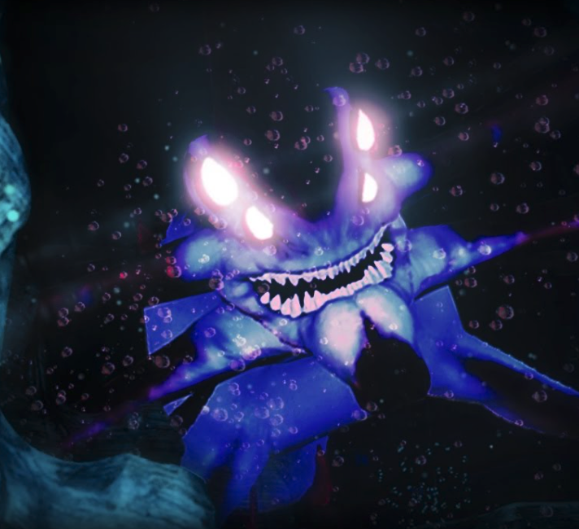

Exploration in subnautica:
Exploring the world of subnautica is no small task.

The vast world allows for hours of exploration, and the many pathways allow you to get lost in the underwater world. There is no map, so you have to remeber what parts of the map look like. This means you actually have to take in your surroundings, rather than looking at a map 24/7. Finding a new area is always a neat experience, as the beautiful landscape and the many new and dangerous creatures that you will find.
This makes it so you pay more attention to the area, allowing you to take in the beauty of the game. Taking in the landscape is a very important thing in games, allowing the player to enjoy something other than grinding or fighting and just appreciating the game for its beauty. This is especially important in a survival game because most people are trying to zoom around and find materials to get better stuff.
The best part of Subnautica is how large and diverse each biome is. You can get lost in each and every biome, all with their little tidbits to explore. Each biome has caves and interesting secrets, like ancient teleporters that lead to an alien contaiment that holds a large ocean creatures.
Another great thing about exploration in subnautica is its base building. This ties into exploration because base-building is inherent to exploration. See a biome you like, you build a base there. If you care about the biome you want to build your base in, this will force you to explore every biome to find one you really like.
Back to the index.